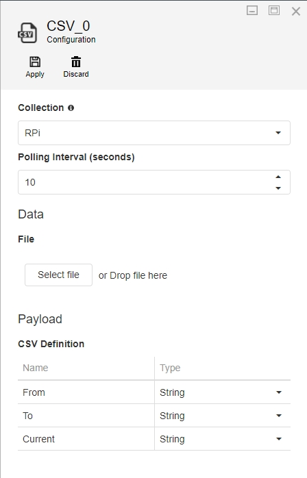
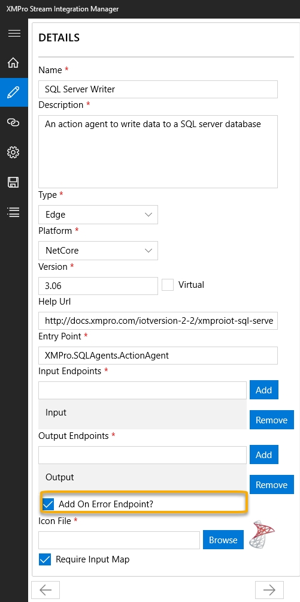

Building Agents
Overview
To get started with developing a new Agent, create a new C# library project in Visual Studio and import the XMPro.IoT.Framework NuGet package. When writing the code for an Agent, you will have to implement a number of interfaces. Which interfaces to implement depends on the category under which your Agent will fall:
Listeners
Listeners are created by implementing IAgent and IPollingAgent interfaces. To push the events to the next receiver, the OnPublish event should be invoked and the events should be passed as arguments.
Action Agents/ Functions
Action Agents are created by implementing the IAgent and IReceivingAgent interfaces. The Receive method will be called every time events are received by this Agent. To publish these events again, the same logic as per the Listener Agent can be used.
Context Providers
Context Providers are created by implementing the IAgent, IPollingAgent interfaces. They are very similar to Listeners; however, Context Providers publish all available records/events when polled instead of only publishing the newer/changed ones.
Transformations
Transformations are implemented in a similar way as Action Agents, except that all Transformations should have the Require Input Map flag set to false and must not implement the GetInputAttributes method, hence it should be:
public IEnumerable<XMIoT.Framework.Attribute> GetInputAttributes(string endpoint, IDictionary<string, string> parameters)
{
throw new NotImplementedException();
}
The interfaces that can be implemented are as follows:
The matrix below shows which interface needs to be implemented for which category Agent:
| Agent Category | IAgent | IPollingAgent | IReceivingAgent | IPublishesError | IAgentLogger |
|---|---|---|---|---|---|
| Listener | Required | Recommended | Optional | Optional | Optional |
| Context Provider | Required | Recommended | Optional | Optional | Optional |
| Transformation | Required | Optional | Required | Optional | Optional |
| Action Agent/ Function | Required | Optional | Required | Optional | Optional |
| AI & Machine Learning / Gen AI | Required | Optional | Required | Optional | Optional |
Note
The IPollingAgent interface is not strictly required for Listeners or Context Providers, however, it is generally used in most cases. Not implementing IPollingAgent for a Listener or Context Provider should be considered an advanced option.
IAgent

IAgent is the primary interface that must be implemented by all Agents as it provides the structure for the workings of the Agent. After implementing this interface, there are several methods you have to add to your project that forms part of this predefined structure.
Settings/Configurations
Some Agents need to be provided with configurations by the user, for example, for a CSV listener Agent to get records from a CSV file, it needs the following:
- Polling interval (in seconds)
- CSV file
- CSV Definition
Each of these settings should be referenced in the code and must correspond to the settings template created when packaging your Agent.
Note
A template is a JSON representation of all the controls and their layout that will be used to capture the settings from a user.
An example of the settings template (generated using the XMPro Package Manager) is shown in the image below. The settings in this example consist of the following controls:
- Group (Data)
- File Upload
- Group (Payload)
- Grid

Each control has a Key, which uniquely identifies it in the template and allows the Agent code to access its value at any time. To get the value contained in a setting, use the following code:
string mySetting = parameters["myUniqueKey"];
Before a template is rendered on the screen, or if a postback occurs on any control in the template, the method below would be called to allow the Agent an opportunity to make any necessary runtime changes to the template, for example, verifying user credentials, displaying all tables of a selected database in a drop-down list, etc. In this example, no changes are being made to the template but, if needed, they can be added to the todo section.
Note
For a postback to occur after a user navigates out of a setting field, the Postback property needs to be set to true when packaging the Agent.
public string GetConfigurationTemplate(string template, IDictionary<string, string> parameters)
{
//parse settings JSON into Settings object
var settings = Settings.Parse(template);
//populate the settings/configuration controls with the user selected values
new Populator(parameters).Populate(settings);
// ToDo: update the controls, values or the data sources here
//return the updated settings xml
return settings.ToString();
}
Validate
If a user tries to run an Integrity Check on a Data Stream in Data Stream Designer, all Agents will be requested to validate the configurations they have been provided. An Agent has to use this opportunity to inform the user about any configurations that are incorrect, for example, credentials that have expired, required values that are missing, etc.
To validate the configurations/ settings in an Agent, the Validate method needs to be implemented. This method returns an array of errors that occurred. If validation was successful, an empty array would be returned.
The example code below verifies if a user has specified a broker address, topic, and payload definition for an MQTT Agent:
public string[] Validate(IDictionary<string, string> parameters)
{
int i = 1;
var errors = new List<string>();
this.config = new Configuration() { Parameters = parameters };
if (String.IsNullOrWhiteSpace(this.Broker))
errors.Add($"Error {i++}: Broker is not specified.");
if (String.IsNullOrWhiteSpace(this.Topic))
errors.Add($"Error {i++}: Topic is not specified.");
var grid = new Grid();
grid.Value = this.config["PayloadDefinition"];
if (grid.Rows.Any() == false)
errors.Add($"Error {i++}: Payload Definition is not specified.");
return errors.ToArray();
}
Output Payload
Each Agent has the responsibility to inform the Engine about the structure of the payload that will be produced by the Agent. To do this, implement the following method:
IEnumerable<Attribute> GetOutputAttributes(string endpoint, IDictionary<string, string> parameters)
This method returns a collection that has an Attribute type, which is a type that represents the name and type of a given attribute in the outgoing payload. As from XMPro.IOT.Framework version 3.0.2, comparison/ equality operations are also supported in Attribute, for example:
new XMIoT.Framework.Attribute("Name1", Types.DateTime).Equals(new XMIoT.Framework.Attribute("Name2", Types.String));
Create
Each Agent needs to implement a method called Create, which will be invoked when your Agent is being hosted. User-defined configuration is passed as a parameter to this method and should be stored in a class variable as far as possible for later use. This is a good point to provide any resources needed for the working of your Agent.
void Create(Configuration configuration)
{
this.config = configuration;
// ToDo: Provision any resources or write Startup logic.
}
Start
The Start method needs to be implemented by all Agents. This method will be invoked when your Agent is hosted and starts to work.
void Start()
Destroy
Each Agent needs to implement a Destroy method, which will be invoked if the Create method was called successfully, when a data stream is either being unpublished or it encounters an error and fails to start.
Use this method to release any resources or memory that your Agent may have acquired during its creation and lifetime.
void Destroy()
Publishing Events
To push the events to the next Agent, your Agent should invoke the OnPublish event with the events passed as arguments:
this.OnPublish?.Invoke(this, new OnPublishArgs(new JArray(), "EndpointName"));
Note
Events are represented as JSON Objects and have to be pushed as a collection, i.e. JArray.
Caution
Please note that OnPublishArgs(Array rtr) is obsolete from XMPro.IOT.Framework 3.0.2 onwards. You are now required to specify the endpoint name on which you would like to publish (i.e. OnPublishArgs(Array rtr, string Endpoint))
Decrypting Values
If an Agent's configuration contains a Secure/Password Textbox, its value will automatically be encrypted. To decrypt the value, use the following set of instructions:
var request = new OnDecryptRequestArgs(value);
this.OnDecryptRequestArgs?.Invoke(this, request);
var decryptedVal = request.DecryptedValue;
Custom Events
While building your Agent, you may need to use external libraries or third-party event subscriptions to handle custom events. If these are used, you must catch any exceptions from the event handlers yourself, to prevent uncaught exceptions that could possibly crash the Data Stream if they get through.
IPolling Agent
The IPollingAgent interface allows time-based operations. Implementing this interface, and opting in to Polling by returning true from the RequiresPolling method, will automatically add a PollingInterval setting to the configuration template of your Agent, which can be used by the user to specify the interval for polling. The Poll method will be invoked every time the poll interval elapses.
void Poll()
This method will be called at regular intervals according to the Configuration settings, and can be used to perform any work or logic you wish, for example, querying a third-party system for changes.
bool RequiresPolling(IDictionary<string, string> parameters)
The RequiresPolling method is an advanced option. It is expected that in most cases, this method should simply return a true value, which will not change the behaviour of the Agent. The PollingInterval setting will display as normal, and the Poll method will be called at that interval, as normal.
Advanced users, however, can use this method to decide to opt-out of Polling settings, by returning false. The parameters method parameter will contain the Stream Object's Configuration, allowing you to determine whether to return true to opt-in, or false to opt out, depending on what settings the user has selected. Opting out will cause the PollingInterval setting to not appear in the configuration tab, and the Poll method to never be called when the Stream is published.
This may be useful when the agent you are building can be configured to either actively query its configured third-party system for data at regular intervals, or set up a persistent connection to the third-party service and passively wait for that connection to deliver data.
If the Agent does not need to query for data at regular intervals, or perform other work or logic on a specific schedule, it is recommended to not implement IPollingAgent rather than always returning false from the RequiresPolling method.
IReceivingAgent
If your Agent is required to receive inputs from other Agents, you should implement the IReceivingAgent interface.
Input Payload
Each Agent is responsible to inform the Engine about the structure of the payload it consumes. To achieve this in your Agent, implement the following method:
IEnumerable<Attribute> GetInputAttributes(string endpoint, IDictionary<string, string> parameters)
This method returns a collection consisting of Attribute, which is a type that represents the name and type of a given attribute in the incoming payload.
Input Mapping
In most cases, if an incoming payload structure is supposed to be different from what the parent is sending, i.e. the Input Payload has been specified above, the user will have to map parent outputs to the current Agent's inputs. To enable this, mark the Require Input Map flag as true in the Stream Integration Manager when packaging the Agent.
Endpoint
Each Agent can have a number of input and output endpoints. Endpoints are the points where incoming or outgoings arrows are connected. Each endpoint consists of a Name<String> attribute. You will be passed an endpoint name when queried for an Input payload definition. Be sure to specify the endpoint name when querying the parent's output payload definition.
Parent Outputs
All receiving Agents can query the structure of parent Agent outputs connected at a given endpoint by invoking an event, as demonstrated in the example below:
var args = new OnRequestParentOutputAttributesArgs(this.UniqueId, "Input");
this.OnRequestParentOutputAttributes.Invoke(this, args);
var pOuts = args.ParentOutputs;
Receiving Events
Events published to a receiving Agent can be received by implementing the following method:
void Receive(string endpointName, JArray events)
The endpointName parameter will identify which endpoint the events have been received at.
Note
It is not guaranteed that the Start method will be invoked before the Receive method. Use the Create method to execute any logic that needs to be executed before the Receive method is called.
IPublishError
An Agent can publish messages to an error endpoint by implementing the IPublishesError interface. An unhandled error in an Agent will be captured and error information will be published to the error endpoint.

Implement the interface member:
public event EventHandler<OnErrorArgs> OnPublishError;
To push the error to the next Agent, the OnPublishError event should be invoked, and the error information should be passed as arguments:
this.OnPublishError?.Invoke(this, new OnErrorArgs(AgentId, Timestamp, Source, Error, DetailedError, Data));
Note
Error endpoints should be enabled in XMPro Stream Integration Manager when packaging the Agent. This can be done by selecting the "Add On Error Endpoint?" checkbox. See the image above for an example.
IAgentLogger
An Agent can output logging to the the Data Stream Logs by implementing the IAgentLogger interface. Like IPublishError, this can be used for errors, but it can also be used to log information or warning messages too.
The prerequisite to use this interface are XMPro.IoT.Framework v4.4.19+ and Data Stream Designer v4.4.19+.
Add an empty constructor to your Agent entry point class and another constructor that accepts an IAgentLogger. See following code for the contents of the two constructors:
private readonly AgentLoggerProxy _loggerProxy; public BaseAgent { _loggerProxy = new AgentLoggerProxy(); } public BaseAgent(IAgentLogger logger) { _loggerProxy = new AgentLoggerProxy(logger); }The IAgentLogger interface contains the logging methods but a proxy class is needed to execute it to avoid compatibility issues with older SH and DS. Create the AgentLoggerProxy class with the following contents:
public class AgentLoggerProxy { private readonly object? _logger; private readonly Type? _loggerType; private readonly Dictionary<string, MethodInfo?> _methods; public AgentLoggerProxy(object? logger = null) { _logger = logger; _loggerType = logger?.GetType(); _methods = new Dictionary<string, MethodInfo?>(); if (logger != null) { // Cache all method infos _methods["LogInfo"] = _loggerType?.GetMethod("LogInfo", new[] { typeof(string), typeof(object[]) }); _methods["LogErrorWithException"] = _loggerType?.GetMethod("LogError", new[] { typeof(Exception), typeof(string), typeof(object[]) }); _methods["LogError"] = _loggerType?.GetMethod("LogError", new[] { typeof(string), typeof(object[]) }); _methods["LogWarning"] = _loggerType?.GetMethod("LogWarning", new[] { typeof(string), typeof(object[]) }); _methods["LogDebug"] = _loggerType?.GetMethod("LogDebug", new[] { typeof(string), typeof(object[]) }); } } public void LogInfo(string messageTemplate, params object[] args) { if (_logger != null && _methods["LogInfo"] != null) { _methods["LogInfo"]!.Invoke(_logger, new object[] { messageTemplate, args }); } } public void LogError(Exception ex, string messageTemplate, params object[] args) { if (_logger != null && _methods["LogErrorWithException"] != null) { _methods["LogErrorWithException"]!.Invoke(_logger, new object[] { ex, messageTemplate, args }); } } public void LogError(string messageTemplate, params object[] args) { if (_logger != null && _methods["LogError"] != null) { _methods["LogError"]!.Invoke(_logger, new object[] { messageTemplate, args }); } } public void LogWarning(string messageTemplate, params object[] args) { if (_logger != null && _methods["LogWarning"] != null) { _methods["LogWarning"]!.Invoke(_logger, new object[] { messageTemplate, args }); } } public void LogDebug(string messageTemplate, params object[] args) { if (_logger != null && _methods["LogDebug"] != null) { _methods["LogDebug"]!.Invoke(_logger, new object[] { messageTemplate, args }); } } public bool HasLogger => _logger != null; }Call the logging methods of the proxy class. This will now display the logs on Stream Host.
protected void LogMessage(string source, string message) { if (_loggerProxy.HasLogger) { loggerProxy.LogInfo($"[{source}] {message}"); } } protected void LogError(Exception? ex, string message) { if (_loggerProxy.HasLogger) { _loggerProxy.LogError(ex, message); } }
Example
The code below is an example of a basic MQTT Listener Agent. Take note of how the interfaces and methods have been implemented.
Note
Please note that this example uses the M2MqttDotnetCore 1.0.7 NuGet package.
using Newtonsoft.Json.Linq;
using System;
using System.Collections.Generic;
using System.Linq;
using System.Text;
using uPLibrary.Networking.M2Mqtt;
using uPLibrary.Networking.M2Mqtt.Messages;
using XMIoT.Framework;
using XMIoT.Framework.Settings;
using XMIoT.Framework.Settings.Enums;namespace XMPro.MQTTAgents
{
public class Listener : IAgent
{
private Configuration config;
private MqttClient client;
private string Broker => this.config["Broker"];
private string Topic => this.config["Topic"];
public long UniqueId { get; set; }
public event EventHandler<OnPublishArgs> OnPublish;
public event EventHandler<OnDecryptRequestArgs> OnDecryptRequest;
public void Create(Configuration configuration)
{
this.config = configuration;
this.client = new MqttClient(this.Broker);
this.client.MqttMsgPublishReceived += Client_MqttMsgPublishReceived;
}
public void Start()
{
if (this.client.IsConnected == false)
{
this.client.Connect(Guid.NewGuid().ToString());
this.client.Subscribe(new string[] { this.Topic }, new byte[] { MqttMsgBase.QOS_LEVEL_EXACTLY_ONCE });
}
}
private void Client_MqttMsgPublishReceived(object sender, uPLibrary.Networking.M2Mqtt.Messages.MqttMsgPublishEventArgs e)
{
try
{
var message = Encoding.UTF8.GetString(e.Message);
this.OnPublish?.Invoke(this, new OnPublishArgs(JArray.Parse(message), "Output"));
}
catch (Exception ex)
{
Console.WriteLine($"{DateTime.UtcNow}|ERROR|XMPro.MQTTAgents.Listener|{ex.ToString()}");
}
}
public void Destroy()
{
if (this.client?.IsConnected == true)
this.client.Disconnect();
}
public string GetConfigurationTemplate(string template, IDictionary<string, string> parameters)
{
var settings = Settings.Parse(template);
new Populator(parameters).Populate(settings);
return settings.ToString();
}
public string[] Validate(IDictionary<string, string> parameters)
{
int i = 1;
var errors = new List<string>();
this.config = new Configuration() { Parameters = parameters };
if (String.IsNullOrWhiteSpace(this.Broker))
errors.Add($"Error {i++}: Broker is not specified.");
if (String.IsNullOrWhiteSpace(this.Topic))
errors.Add($"Error {i++}: Topic is not specified.");
var grid = new Grid();
grid.Value = this.config["PayloadDefinition"];
if (grid.Rows.Any() == false)
errors.Add($"Error {i++}: Payload Definition is not specified.");
return errors.ToArray();
}
public IEnumerable<XMIoT.Framework.Attribute> GetOutputAttributes(string endpoint, IDictionary<string, string> parameters)
{
var grid = new Grid();
grid.Value = parameters["PayloadDefinition"];
foreach (var row in grid.Rows)
{
yield return new XMIoT.Framework.Attribute(row["Name"].ToString(), (Types)Enum.Parse(typeof(Types), row["Type"].ToString()));
}
}
}
}
Further Reading
Last modified: August 20, 2025